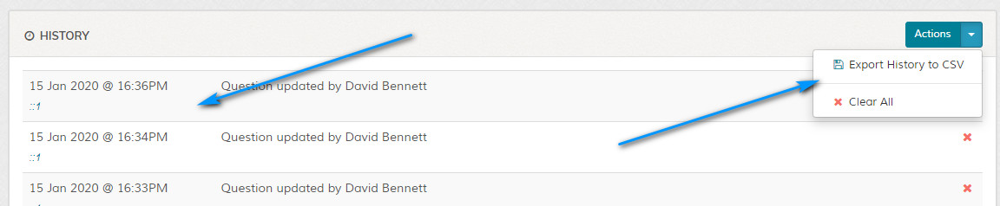
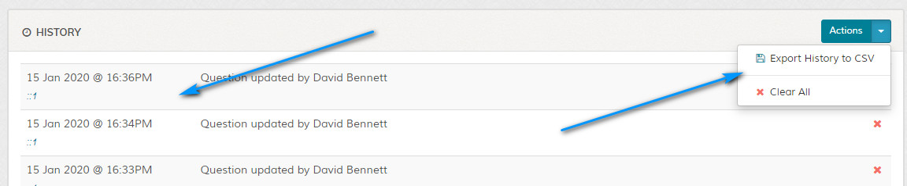

Add Question
Overview
Enables adding of new FAQ question. Please read carefully. Click example images to display full size version in new tab/window.
Screenshot
{kind=link}
Question Options
Enable Question - Enables question.
Featured Question - Featured questions appear on main account dashboards under featured questions.
Question - Enter question. Clicking the crosshair icon in the text area will expand the textarea. Useful on small devices.
Answer - Enter answer to question. BB code may be used to enhance formatting. More info on BB code here.
OR Load From Custom Template - If set, loads file in 'content/**theme**/custom-templates' folder. Useful if you need to add custom javascript or PHP code etc. See 'README.txt' file in 'content/**theme**/custom-templates' folder for more information. Custom template file should exist in all theme folders.
Search Keywords - Enter keywords that will act as search keywords for this question. For example, let`s say you have a question related to capital cities, you might want to enter the following as your search keywords: london paris moscow etc. Keywords only need to be delimited with a space and ideally search keywords should be 4 characters or more. Note that search keywords are not displayed to visitors.
Featured Question - Featured questions appear on main account dashboards under featured questions.
Question - Enter question. Clicking the crosshair icon in the text area will expand the textarea. Useful on small devices.
Answer - Enter answer to question. BB code may be used to enhance formatting. More info on BB code here.
OR Load From Custom Template - If set, loads file in 'content/**theme**/custom-templates' folder. Useful if you need to add custom javascript or PHP code etc. See 'README.txt' file in 'content/**theme**/custom-templates' folder for more information. Custom template file should exist in all theme folders.
Search Keywords - Enter keywords that will act as search keywords for this question. For example, let`s say you have a question related to capital cities, you might want to enter the following as your search keywords: london paris moscow etc. Keywords only need to be delimited with a space and ideally search keywords should be 4 characters or more. Note that search keywords are not displayed to visitors.
Categories
Click the categories tab to set which category this question applies to.
Private categories are marked with a icon. If a user icon is shown next to the padlock, the category is restricted to one or more accounts. Click icon to display restricted accounts.
Private categories are marked with a icon. If a user icon is shown next to the padlock, the category is restricted to one or more accounts. Click icon to display restricted accounts.
Attachments
Click the attachments tab to assign attachments to this question.
History
If enabled in settings and permissions allow a staff member to view the F.A.Q question history, this appears on the edit screen. Export and
delete options are available. Can be useful to see who's been updating questions.


{kind=link}